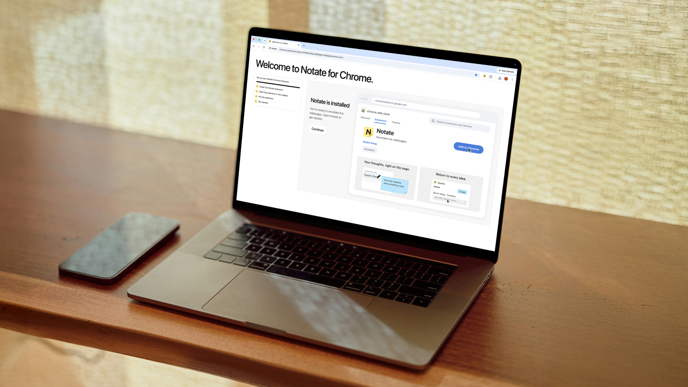
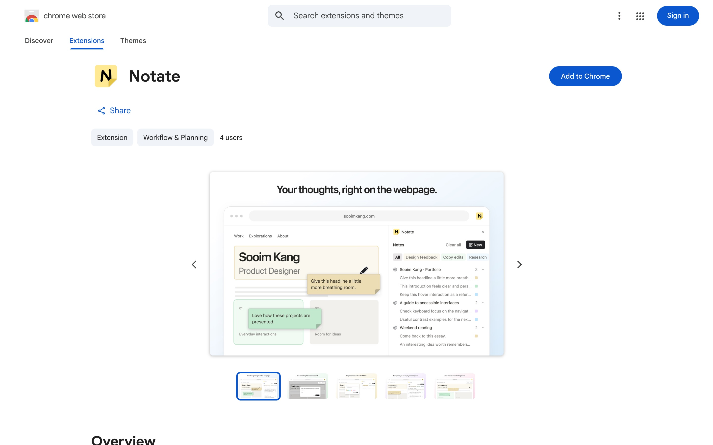
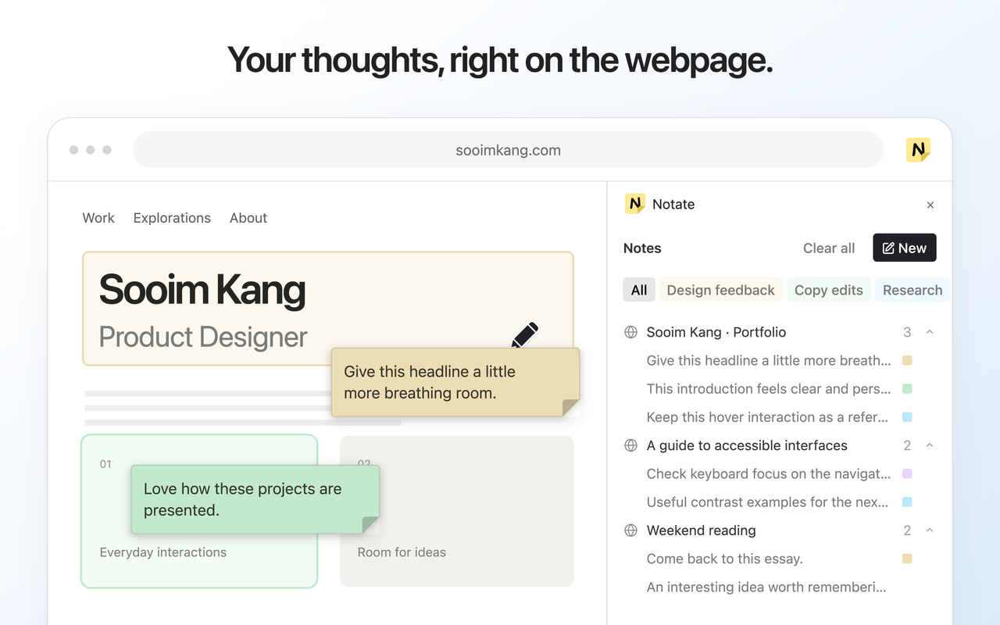
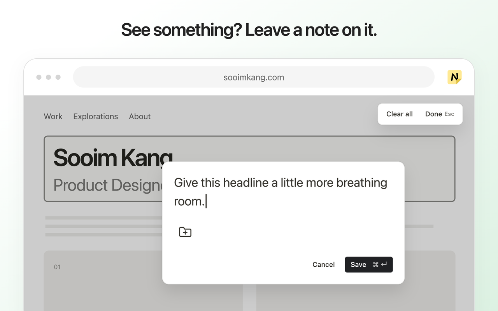
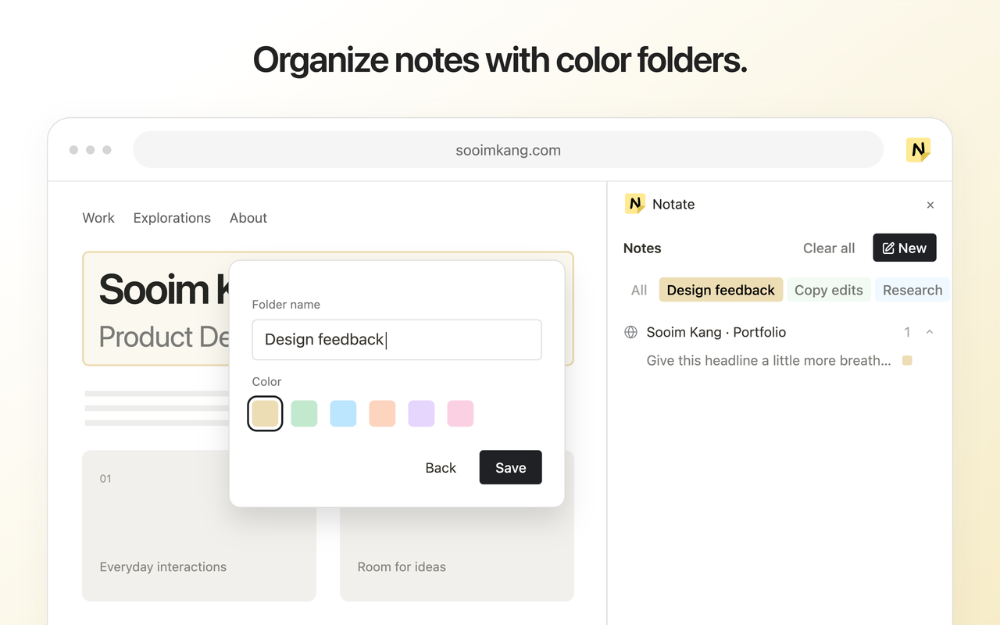
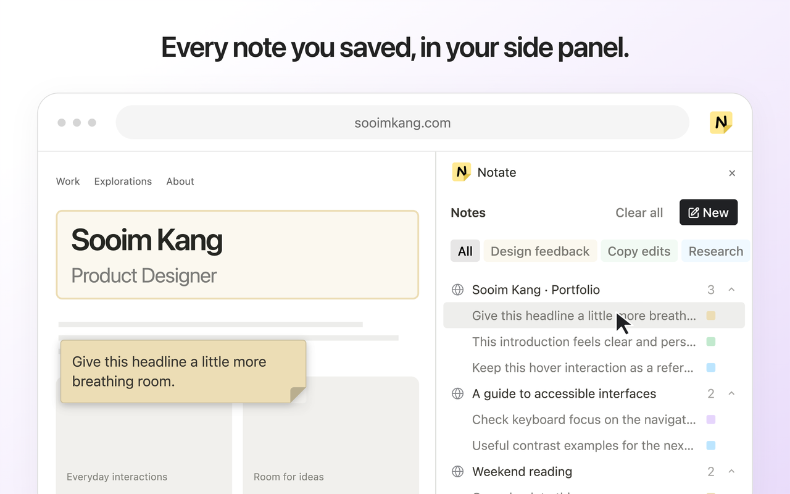
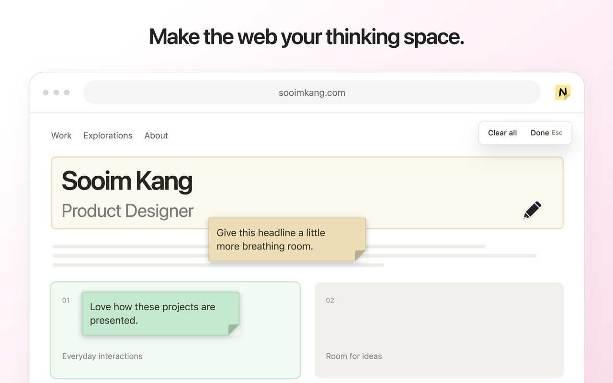
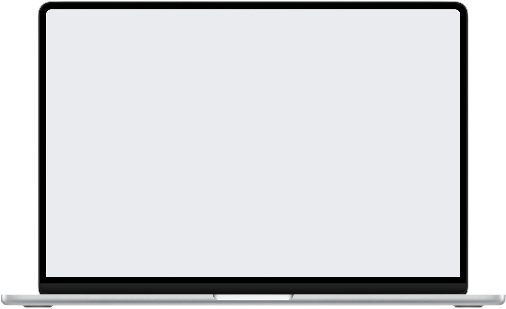
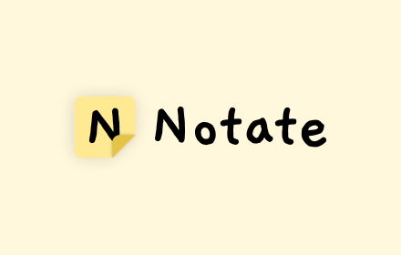

Notate is a Chrome extension that lets users annotate live webpages, organize ideas by project, and revisit them in their original context. Independently designed, built, and published to the Chrome Web Store.

Problem
We save what we find online, but lose the thinking behind it.
I interviewed four people about how they save online content and identified three common workarounds, each with its own limitations.
Keeping tabs open
References get buried among open tabs and become difficult to find.
Bookmarking
Bookmarks save webpages, but not what caught our attention or why.
Screenshotting
Screenshots preserve details but disconnect them from the original webpage.
Opportunity
How might we capture thoughts while browsing without losing their original context?
Solution
Turn any webpage into a space for notes and ideas.
Notate anchors annotations to live webpage elements, organizes them across sites, and lets users return to the exact elements they annotated.





Core flows
Annotate. Organize. Return.
Annotate
Leave notes directly on webpage elements.
Select any element, write a note, and save it alongside the original content.

Organize
Bring related notes together across websites.
Group annotations into color-coded folders by project or purpose.
Return
Revisit your notes exactly where you left them.
Open any saved note to return directly to its original webpage element.
Onboarding
Set up Notate and make your first annotation.
A guided welcome page walks users through opening and pinning Notate, confirming each step before prompting their first annotation on a real webpage.
Design decisions
Preserving context without interrupting browsing.

01 · Element-level anchoring
Attach notes to elements, not entire webpages.
Anchoring notes to specific elements preserves their context as users scroll. Notes remain draggable to avoid covering content.
If a site is already open, clicking it in the side panel switches to that tab with its notes showing, and choosing a single note from its list scrolls straight to that note. A note from a site that isn’t open opens the site in a new tab.
02 · Note-level organization
Organize thoughts, not webpages.
Folders apply to individual notes rather than URLs, allowing users to group ideas across websites and projects.
03 · Non-intrusive revisiting
Revisit notes without interrupting browsing.
Read-only previews keep notes out of the way until needed. Esc lets users step back from annotating to browsing notes, then exit Notate, while selecting a note jumps to its original element without re-entering annotation mode.
If a webpage changes, Notate flags missing elements rather than misplacing notes. All annotations remain in local browser storage, without tracking or network requests.
04 · Scoped deletion
Delete at the scale you’re working at.
A note’s × peels it off the page right away. Clear all in the page toolbar removes every note on that page, and right-clicking a note in the side panel deletes it without opening its page. Deletions that reach beyond the note in front of you ask for confirmation first.
Build
Building a Chrome extension with AI coding agents
I built Notate with Claude Code, using product specifications and decision logs to guide implementation across Chrome's side panel, content scripts, and local storage.
The user journey, and what runs each step
The spec the agents built from
Launch
From a personal workflow problem to a published Chrome extension
I launched Notate on the Chrome Web Store, reaching 50+ installs without promotion and receiving its first public review within days.

Notate Add notes directly to live webpages and revisit them exactly where you left them. InstalledThis was a lifesaver when working on my portfolio and trying to save all the different visual references I had across sites. Definitely recommend anyone to use who needs to reference back to a lot of live sites for their projects!
Reflection
Designing beyond the moment of interaction
Taking Notate from an idea to a published Chrome extension challenged me to think beyond the moment of interaction, from how users retrieve saved information to how annotations behave on websites I don’t control.
Takeaway 01 · User behavior
Saving information is only useful if people can recover the context that made it worth saving.
Takeaway 02 · Chrome extension
Designing for live webpages means accounting for changing content, unpredictable layouts, and the browser’s own constraints.